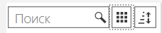
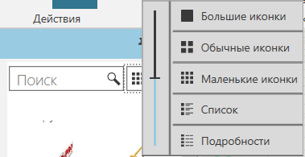

Просмотр Объектов |
|
Объекты можно просматривать, используя один или несколько режимов отображения. 1.В панели Каталог, щелкните коллекцию или источник. 2.В области Отображение нажмите Вид, а затем переместите ползунок или нажмите на иконку, чтобы изменить режим отображения.
  Подробный режимВ режиме сведений объекты отображаются в табличном формате с заголовками столбцов, указывающими свойства метаданных элементов. Вы можете: ·Перетащить заголовок столбца до или после другого столбца в область, обозначенную двумя синими стрелками. ·Щелкните заголовок столбца, чтобы отсортировать элементы. ·Щелкните правой кнопкой мыши столбец или ячейку и выберите Редактировать столбцы чтобы открыть редактор для перечисления и упорядочивания столбцов. ·Щелкните ячейку правой кнопкой мыши и выберите Копировать значение. |